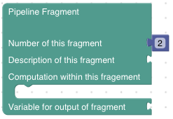
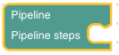
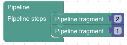

GeoArmadillo Pipelines
The GeoArmadillo Pipeline combines multiple Pipeline Fragments to perform tasks of any complexity.
All Blocks that are needed to build a Pipeline can be found in the Pipeline category of the toolbox:
Pipeline Fragments
The Pipeline Fragments control what actually happens in the Pipeline. Each Pipeline Fragment has a number, the ID number of the respective Pipeline Fragment. In the example below it is number 2. Additionally, a description can be added to each Pipeline Fragment. A single or multiple stacked Blocks are inserted into the free space of the Pipeline Fragment. Those Blocks define the computations performed in the respective Pipeline Fragment.
The Pipeline
The actual Pipeline combines all Pipeline Fragments in any order and thus generates the main method in the output Python script. There must be exactly one Pipeline Block (this is currently not enforced or checked, so take care of it yourself please!). The order of the Pipeline Fragments defines the order in which the computations are executed.
Tip
Running first Pipeline Fragement 2 and in continuation Pipeline Fragment 1 looks like this:
Variables defined in previously executed Pipeline Fragments can be used in subsequent Pipeline Fragments. However, there is no future access. If Pipeline Fragment 1 computes a variable required in Pipeline Fragment 2, Pipeline Fragment 1 has to be listed above Pipeline Fragment 2 in the Pipeline.